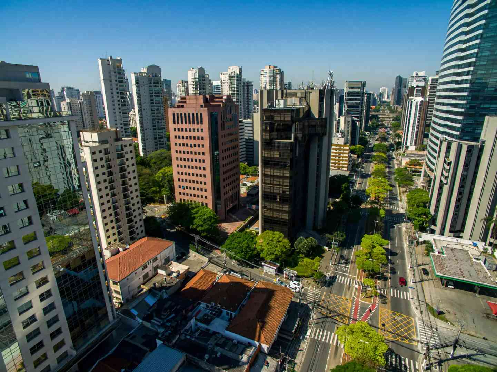
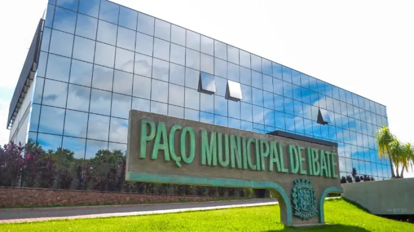

Atrações turísticas de São Carlos, Araraquara e Ibaté
São Carlos

É um município brasileiro localizado no interior do estado de São Paulo, na região Centro-Leste. A cidade de São Carlos é conhecida como a Capital Nacional da Tecnologia por reunir um grande número de empresas de base tecnológica, instituições de ensino e pesquisa, além de uma alta concentração de professores doutores.
Araraquara

Araraquara é um município no interior do estado de São Paulo, no Brasil. O município é formado pela sede e pelos distritos de Bueno de Andrada e Vila Xavier. Uma das maiores produtoras e exportadoras de suco cítrico do país está em nela. Junto com outras quatro produtoras de municípios vizinhos, responde por 96% da produção brasileira de suco de laranja.
Ibaté

Ibaté é um município brasileiro do estado de São Paulo. O município de Ibaté, conta com cerca de 290 quilômetros quadrados de superfície total, está situado na região Central do Estado de São Paulo.